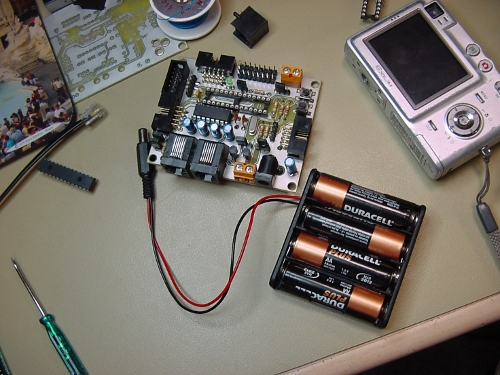
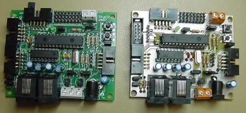

Hace unas semanas comenzamos la migración de la tarjeta Skypic al Kicad para que sea Hardware libre sin restricciones (Ver entradas (1) y (2) ).
La nueva placa es la versión 1.3 (Skypic-2009) y es prácticamente igual a la actual (1.2, Skypic-2007) con los siguientes cambios:
Ayer viernes estuvimos Andrés, Ricardo y yo frikeando y soldando el primer prototipo. En esta foto se pueden ver las dos tarjetas: La skypic-2007 y el prototipo de la skypic 2009:

Podéis ver más fotos en el álbum de la skypic-2009. El esquema y PCB para kicad están accesibles en este repositorio.
Aunque nunca hayáis manejado un programa de diseño electrónico, os animos a que os bajéis el Kicad, todos los ficheros de la Skypic-2009 y que echéis un vistazo. Sólo tenéis que abrir el fichero skypic.pro desde Kicad. Los usuarios de Ubuntu/Debian lo tenéis muy fácil: basta con un apt-get install kicad (o su instalación desde Synaptic) 😉
Hardware libre al poder!!!
Qué bien que os hayáis animado a pasar la placa a kiCad 🙂
Saludos!
Gracias Carlos!
Ahora lo siguiente es sacar una tirada industrial (“verde”) corta para validar el PCB